Livros
Livros em português
Todos os livros podem ser lidos na tela, baixados ou escutados por leitura automática.
Livros
Livros em espanhol
Todos os livros podem ser lidos na tela, baixados ou escutados por leitura automática.
Vídeos
Assista aos vídeos
Clique no vídeo para reproduzir. Cada vídeo traz um título, uma pequena descrição e um botão que abre a descrição completa.
Áudios
Escute os áudios
Áudios gravados. Você pode escutar no computador, aparelho celular, entre outros, inclusive utilizando fones de ouvido. Pode escutar em diferentes lugares, em casa, na rua, etc., até mesmo enquanto está fazendo outras atividades. Além destes áudios abaixo, todos os livros colocados nas partes anteriores também possuem o botão “Escutar áudio”, com leitura automática.
Textos
Temas e resumos
Nesta seção há diversos tipos de textos, inclusive fragmentos de temas específicos selecionados dos diversos livros anteriores, resumos, perguntas e respostas, entre outros. Os textos podem ser lidos ou escutados diretamente no seu computador ou aparelho celular, assim como podem ser baixados. Você também pode ouvir por fones de ouvidos, ou de outras formas, enquanto faz outras coisas.
Galeria
Galeria de imagens
Clique em uma imagem para ampliar.
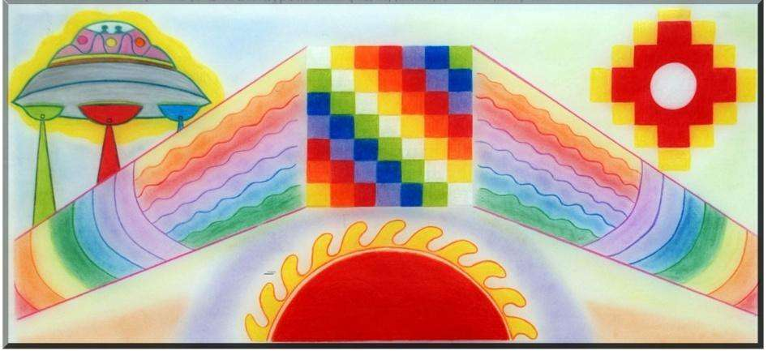
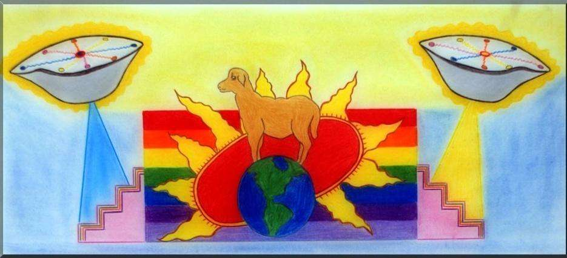
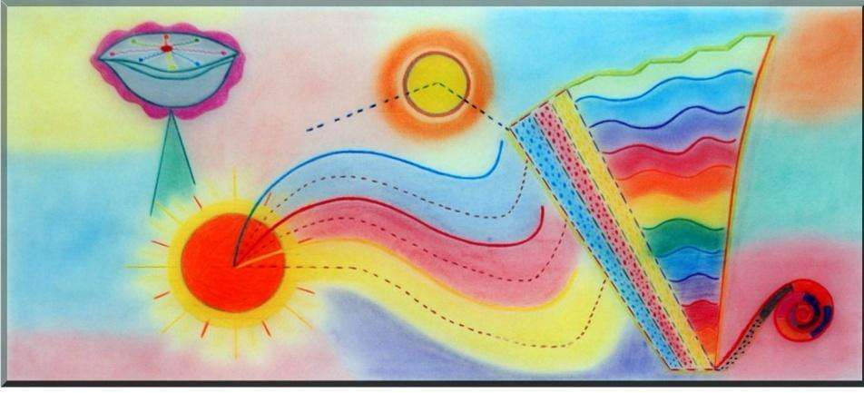
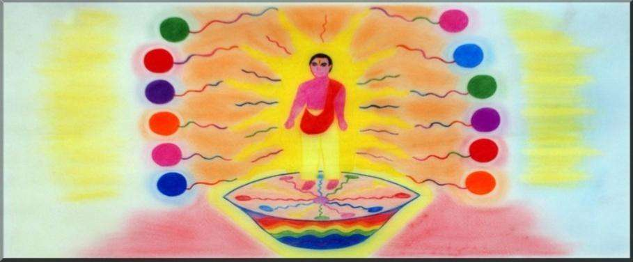
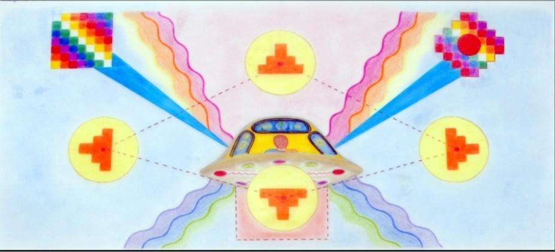
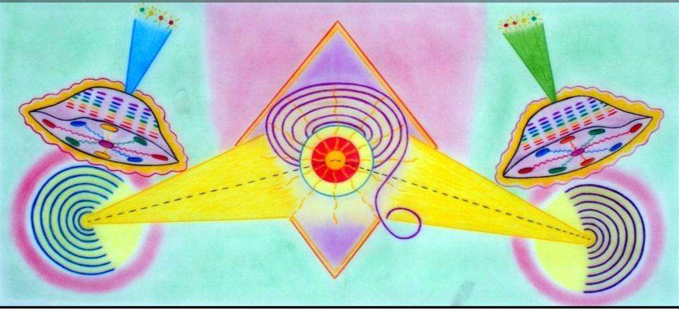
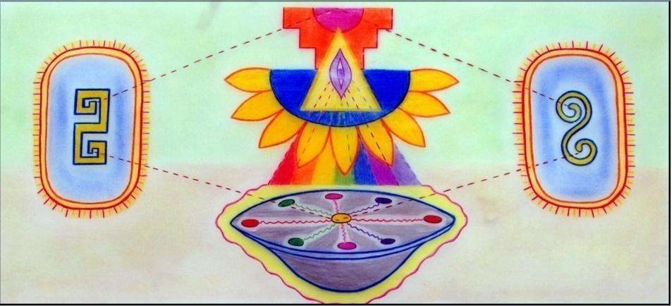
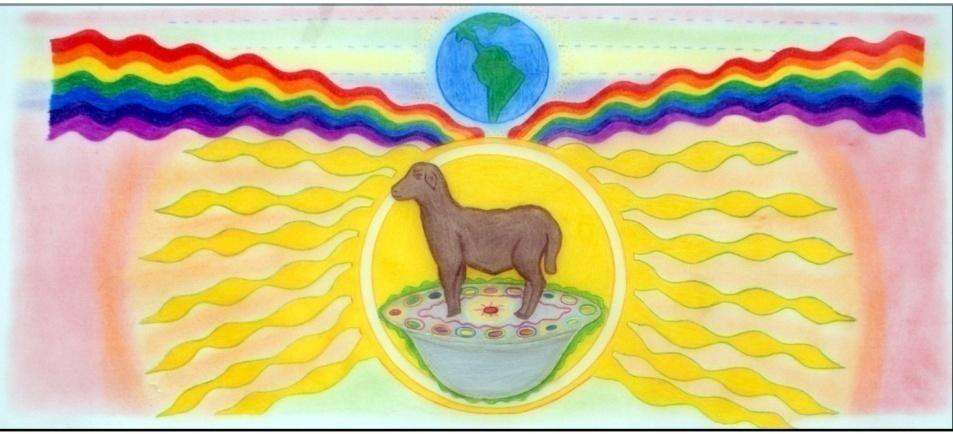
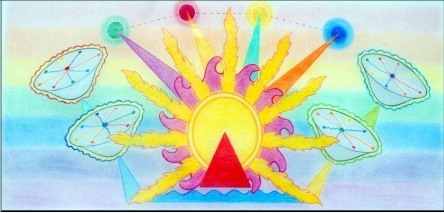
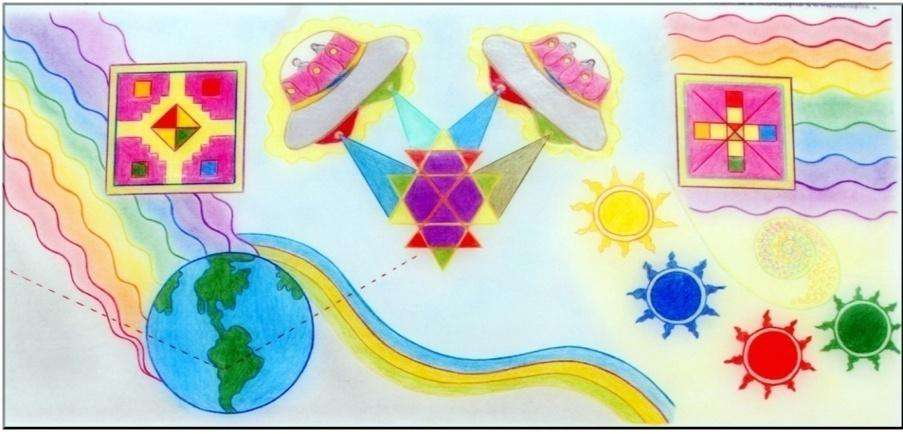
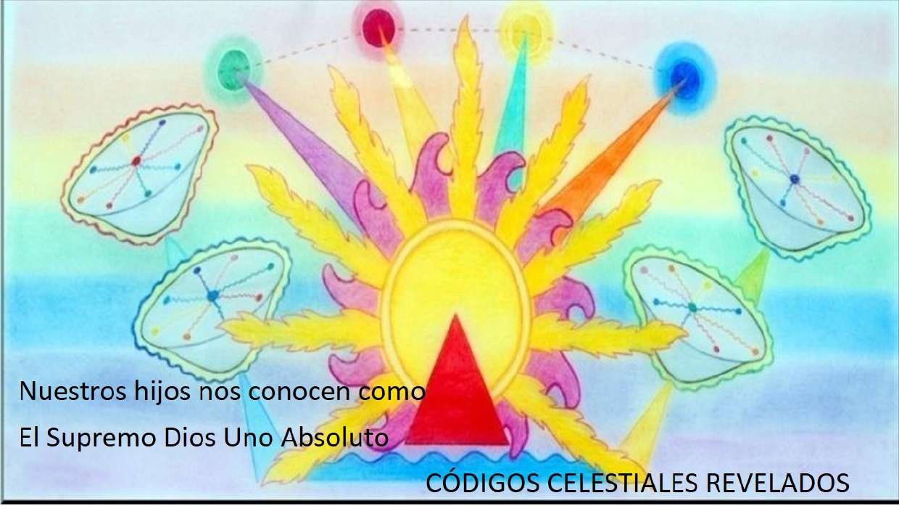
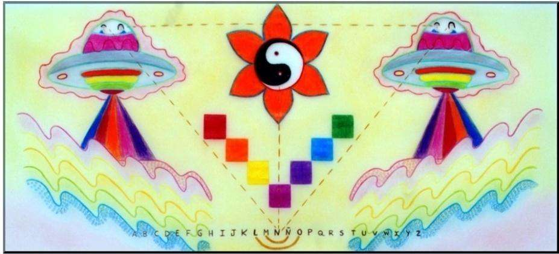
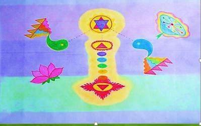
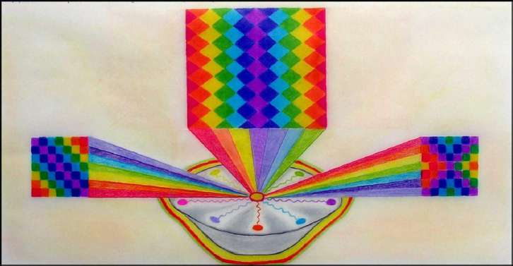
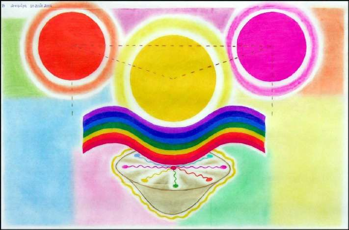
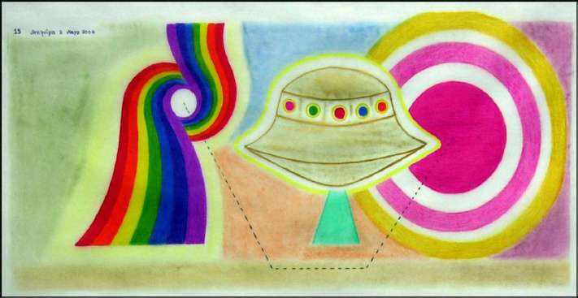
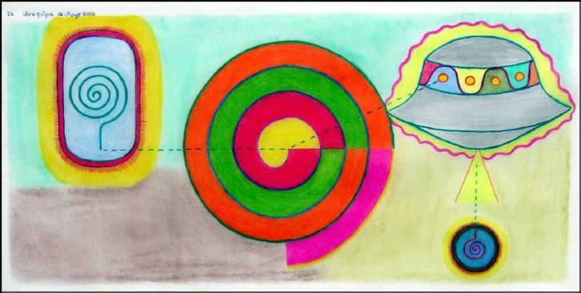
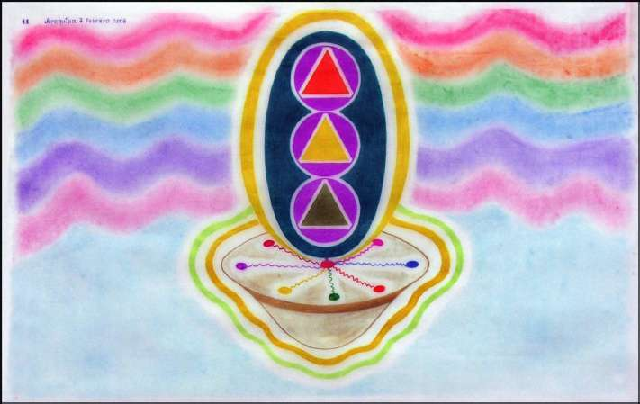
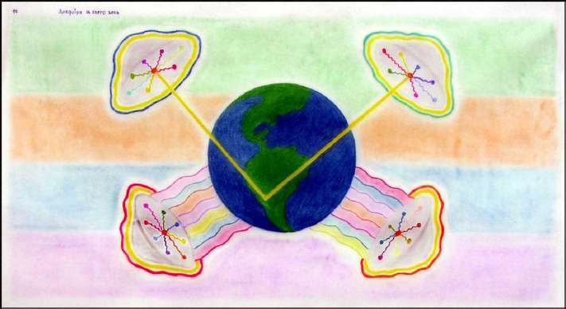
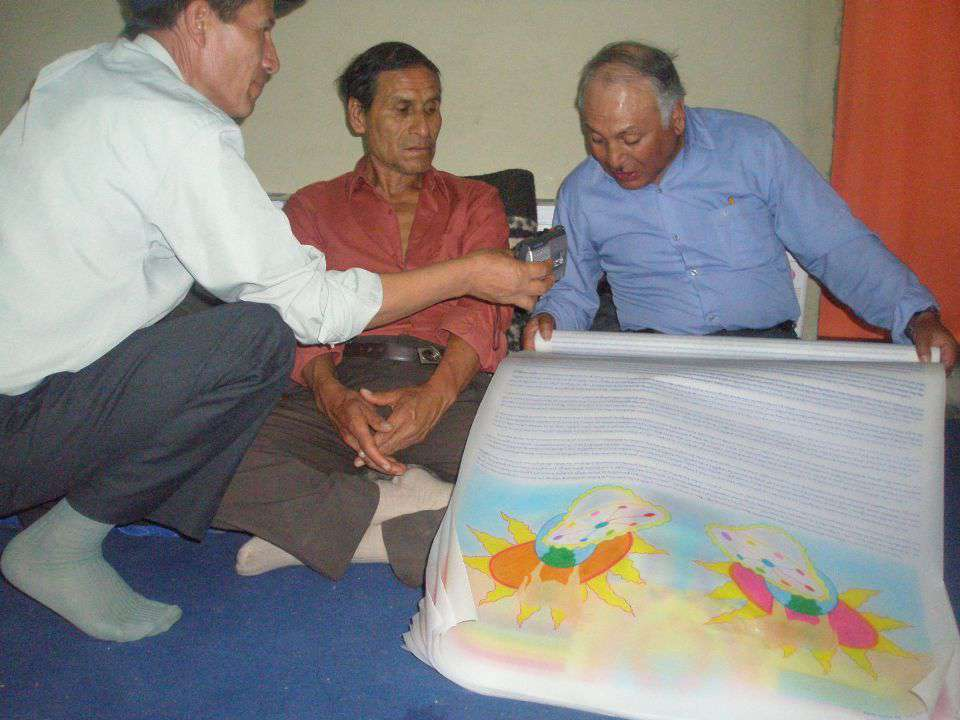
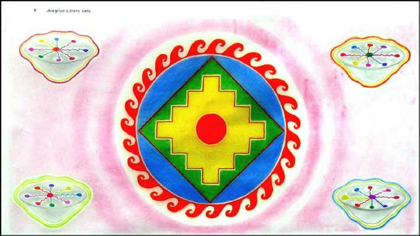
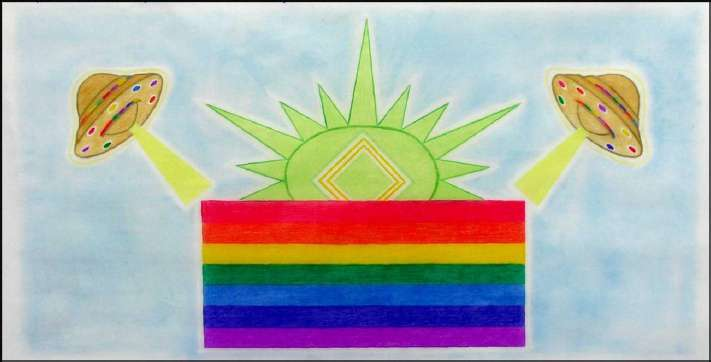
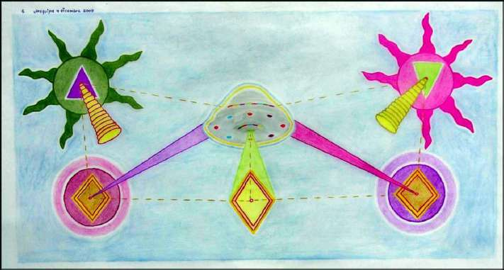
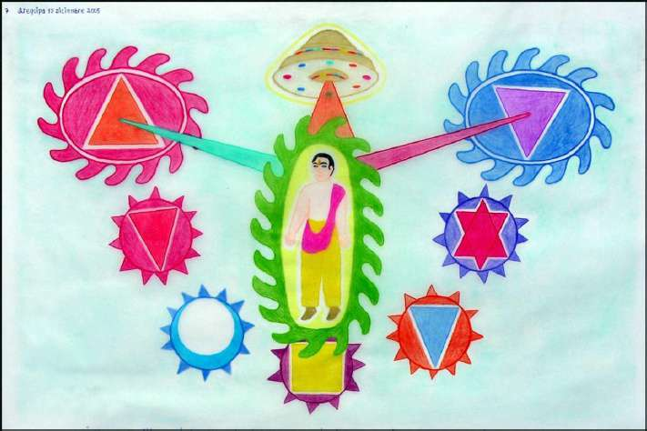
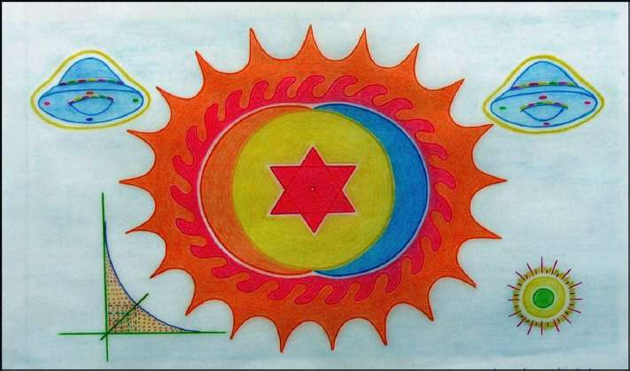
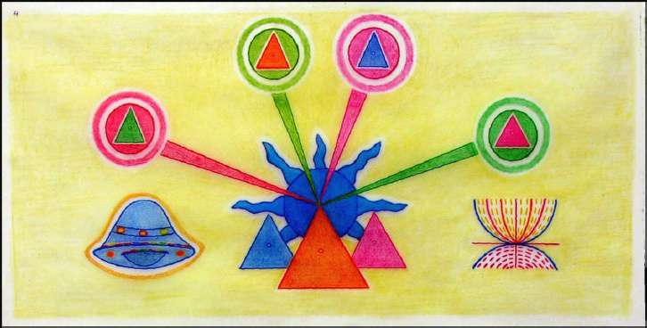
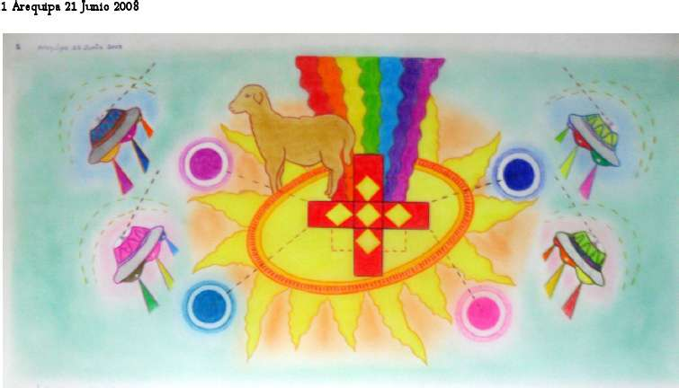